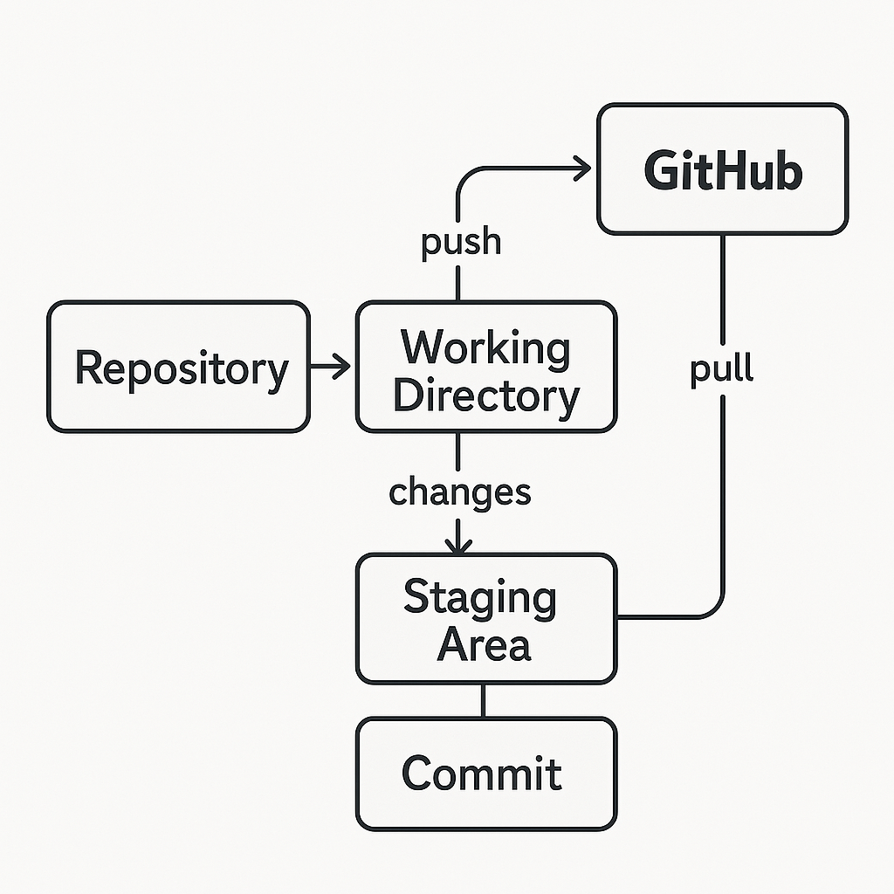

🐙
GitHub Guide
GitHub is a platform for hosting and collaborating on code. It uses Git, a version control system, to track changes and enable team contributions.

Key Concepts
- Repository (Repo): A project folder with code, documentation, etc.
- Commit: A snapshot of code changes.
- Branch: A parallel version of the code.
- Merge: Combining changes from one branch into another.
- Pull Request (PR): A request to merge code — often reviewed by teammates.
- Fork: Your own copy of someone else's repo.
Essential Commands (in terminal)
git clone <repo_url> # Download a repo
git add . # Stage all changes
git commit -m "message" # Save changes
git push # Upload changes
git pull # Download updates
What You Can Do With GitHub
- Host your code publicly or privately
- Collaborate with others through PRs and issues
- Create static websites with GitHub Pages
- Showcase projects in a portfolio
Tips for Beginners
- Use Descriptive Commit Messages: Instead of vague messages like "Fixed stuff," use clear descriptions like "Fixed bug in user authentication logic."
- Branching: Create branches for new features or bug fixes to keep your main codebase stable.
- Experiment Freely: Git allows you to try new things without fear. You can always revert to a previous commit if needed.
👉 To get started with creating your own repository, check out the
GitHub Repository Tutorial
.